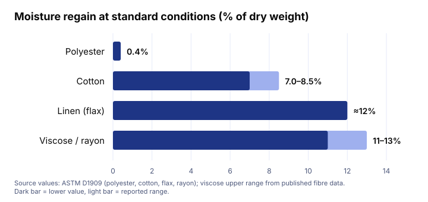

Moisture regain is the amount of water a textile fibre holds, expressed as a percentage of its dry weight, when it has settled in a standard atmosphere. It explains, in one number, why polyester feels dry and clammy in heat, why viscose feels soft and cool, and why a cotton-rich fabric absorbs sweat. It also drives a very practical commercial calculation: the invoice weight of yarn and fibre shipments.
Definition: regain vs moisture content
Two related measures are often confused. Both compare the weight of a conditioned sample (W) with the same sample after oven drying (D):
Regain uses the dry weight as the base; moisture content uses the wet weight. For a fibre with 8.5% regain, MC is 8.5 ÷ 108.5 ≈ 7.8%. For polyester, the two figures are practically the same because so little water is involved. Textile trade and standards use regain, not moisture content. Standard conditioning is done at 20 °C and 65% relative humidity (the standard atmosphere defined in ISO 139).
Commercial moisture regain values
The commercial values in ASTM D1909 include polyester at 0.4%, cotton at 7.0% (natural yarn) to 8.5% (mercerized yarn), flax at 12.0% (raw) and rayon, the regenerated cellulose that includes viscose, at 11.0%. Other published fibre data put viscose at about 13% (Testex), which is why the chart below and the table show a range.

| Fibre | Commercial regain (% of dry weight) |
|---|---|
| Polyester | 0.4 |
| Cotton | 7.0 (natural yarn) – 8.5 (mercerized yarn) |
| Flax / linen (raw) | 12.0 |
| Rayon / viscose | 11.0 (ASTM) – about 13 (other published data) |
Regain values differ slightly by source and by condition (raw, scoured, dyed or mercerized), so quote the source when you quote the number.
What regain means for comfort
Fibres with higher regain absorb moisture from the skin; fibres with very low regain do not. Polyester’s 0.4% is associated with a dry hand, static build-up and a tendency to feel stuffy in heat, while cotton absorbs sweat readily and keeps its strength when wet. Viscose absorbs even more but loses strength when wet (Testex). In a blend, you can shift the balance with the ratio — see polyester viscose vs polyester cotton. Regain is only one input; yarn, construction and finishing also change comfort, as the guide to ring-spun vs polyester yarn explains.
Calculating the regain of a blend
A blend’s regain is the weighted average of its components’ regains (the method used in NPTEL’s moisture FAQ, which works a 60/40 cotton/viscose example using 8.5% and 13% to get 10.3%).
These are fibre-level estimates. They show direction, not measured comfort.
Using regain to find invoice weight
Because fibre and yarn gain or lose water with the air, trade weights are normally corrected to the commercial regain. The correct (invoice) weight is the oven-dry weight plus the official regain:
Worked example. A shipment of 80/20 polyester–cotton yarn weighs 10,000 kg when received, at an actual regain of 4.0%. The official blend regain is 0.8 × 0.4 + 0.2 × 8.5 = 2.02%.
The buyer is therefore billed for about 9,810 kg, not 10,000 kg. The same logic works in reverse for moisture-damp consignments.
Where this matters when you buy fabric
- Blend selection — use regain to reason about which ratio suits a hot or humid market, then verify with wear or wicking tests.
- Weight claims — fabric weight and shipment weight depend on moisture, so state the conditioning basis when comparing GSM. See how to calculate fabric GSM.
- Specification discipline — pair regain-based reasoning with test standards, as in fabric quality tests for bulk buyers.
Frequently asked questions
What is the moisture regain of polyester?
Polyester’s commercial moisture regain is 0.4% (ASTM D1909).
What is the moisture regain of cotton?
8.5% is the figure widely used for cotton; ASTM D1909 lists 7.0% for natural cotton yarn and 8.5% for mercerized cotton yarn.
What is the difference between moisture regain and moisture content?
Regain is water weight as a percentage of dry weight; moisture content is water weight as a percentage of total (wet) weight. Textile standards and trade use regain.
How do I calculate the moisture regain of a blend?
Multiply each fibre’s share by its regain and add the results. For a 65/35 polyester–viscose blend with viscose at 13%, that is about 4.8%.
Is higher moisture regain always better?
No. Higher regain improves absorbency, but viscose loses strength when wet and can be dimensionally unstable. The right level depends on the end use.
Conclusion
Moisture regain is a compact way to compare fibres and to price shipments correctly. Use it to reason about blends, quote the source of your values, and back the reasoning with tests on the actual fabric.
Related reading
Sources
- ASTM D1909 — Standard Table of Commercial Moisture Regains for Textile Fibers
- NPTEL — Moisture textiles FAQ (blend regain worked examples)
- Testex — viscose fibre characteristics
- Testex — cotton vs viscose vs polyester moisture behaviour
Figures marked as estimates are calculated from the cited fibre or construction values; they are not test results for any specific ENZO fabric. Source pages were reviewed on 4 November 2026.